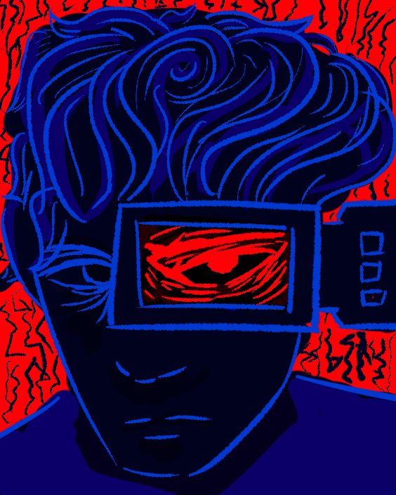
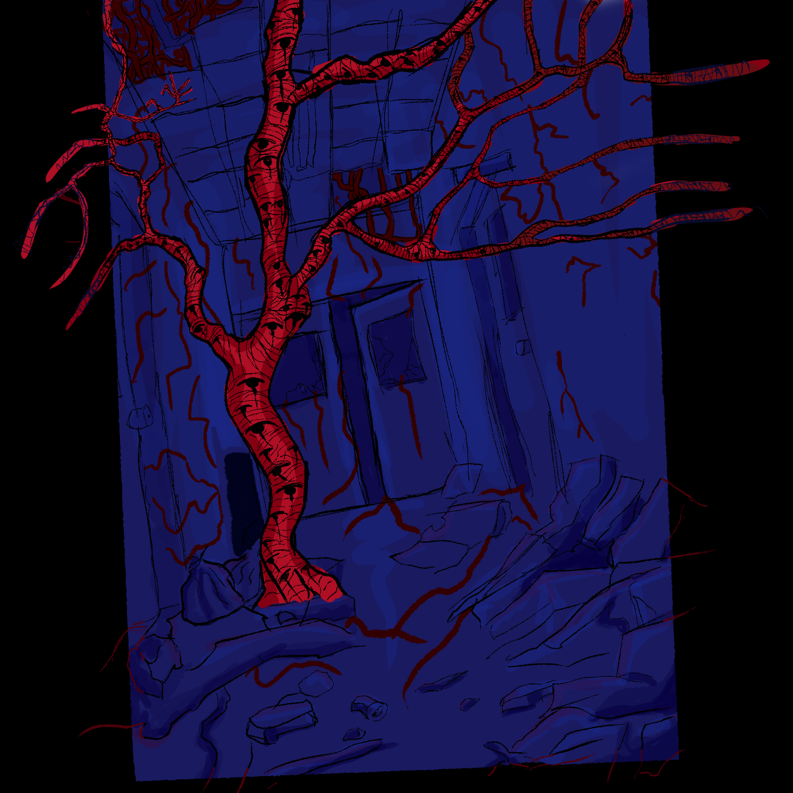
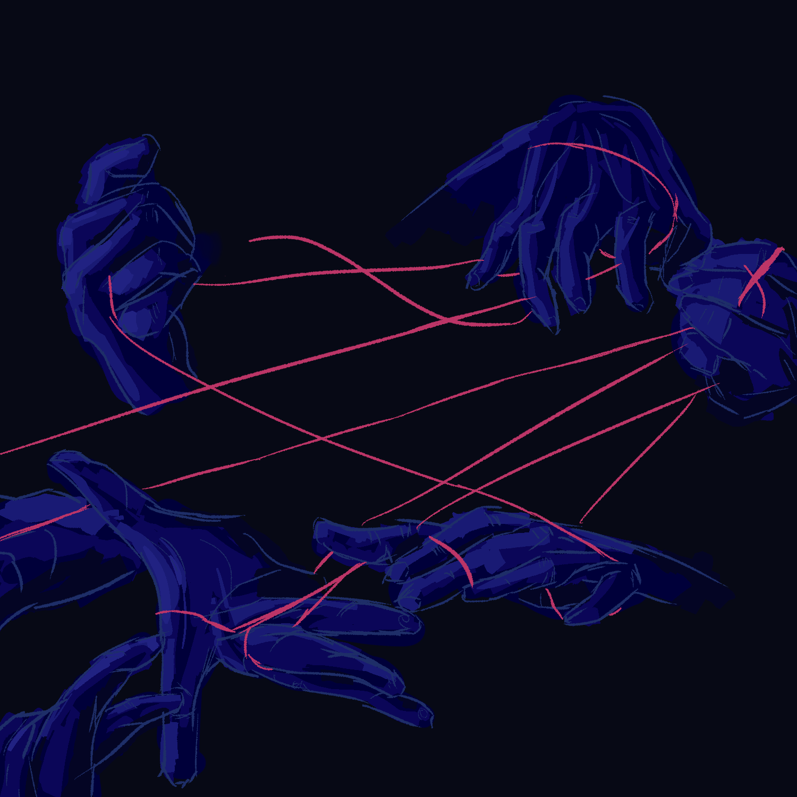

Galeria

Artblock
Esse desenho foi o começo do meu processo e estilo atual, focando nas cores entre vermelho e azul, eu fiz ele como no nome disse no meio de um processo de artblock
onde eu não tava muito animado com arte, só queria me obrigar a desenhar algo, não é nada demais, não me orgulho muito desse, mas a importância dele para o estilo que eu
estou tentando desenvolver atualmente é importante para mim.

Eyes
Esse foi o começo da minha nova rotina de realmente começar a desenhar uma vez por dia,
além disso, foi esse que realmente fez eu começar a me manter nessa paleta de cor e adotar ela como
uma forma de expressar meu estilo de desenho.

A mão do acusador
Esse desenho eu decidi pegar referência do jogo FAITH, adicionei alguns elementos para fazer a arte um pouco
mais unica, para evitar ser só uma copia 1:1 da imagem que o jogo apresenta.

I am not your prey.
Desenho feito com referências que eu peguei no pinterest, de roupas e fantasias que eu achei interessante, não tem nenhum
motivo a mais por eu ter feito esse desenho a não ser diversão.

Estudo sobre mão
Desenho feito para estudar e praticar sobre mão. Foi quando eu decidi pegar essa semana para fazer de mão meu objetivo principal de estudo.

Light Might
Desenho feito com base de outro desenho que eu encontrei no pinterest, tentei estudar o jeito que o artista original (Exelerro) desenha e colore mãos.


Irmãs
Nenhum motivo em especial para esse desenho, só queria me divertir desenhando meus amigos.

A thousand bloody mouths
Outro desenho feito a base de referências, no começo da semana que esse desenho foi feito, decidi que iria focar em desenhar animais durante a semana,
estudar e praticar.

Prey Insight
Desenho feito com base de uma foto de referência que peguei do pinterest, achei que seria interessante de estudar as orelhas do coelho da foto que peguei de referência,
o jeito que a luz passa pelas orelhas fizeram um efeito interessante.